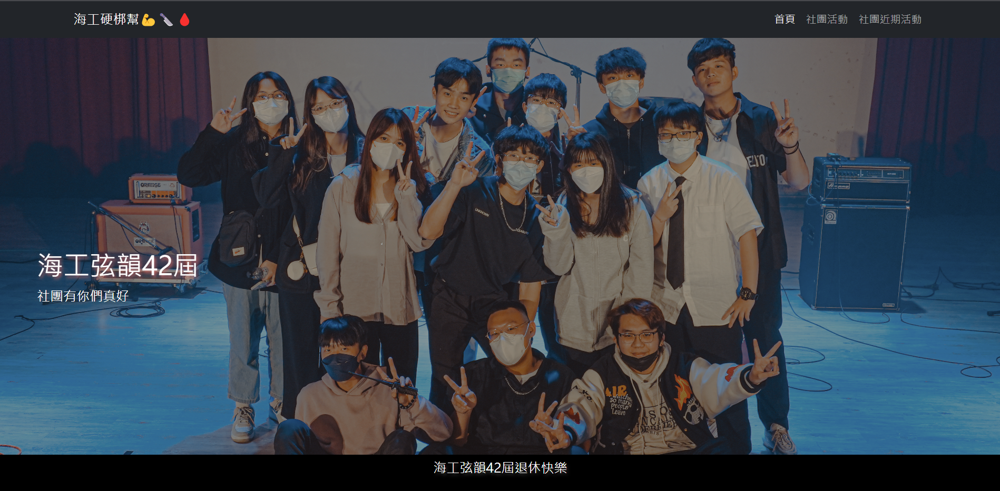
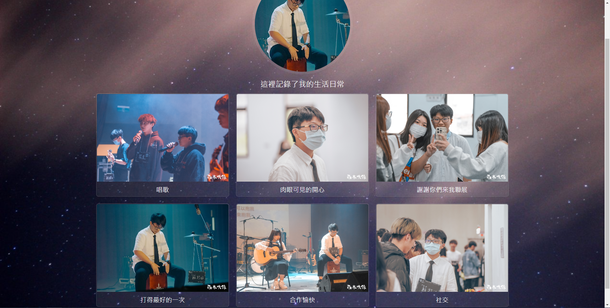

你好！我是 陳思琳，目前正在修讀網頁設計課程。我熱愛透過程式碼將創意轉化為現實，並且想要開發出更方便的界面供使用者使用。
除了寫程式，我也喜歡運動與旅遊，這些愛好讓我學會從不同角度觀察世界，並將這些所看到的學到的融入到我的作品中。
這是我在這堂課第一次設計靜態網頁，希望能完整展現這段時間的學習成果。
探索熱情、創造價值，永不止步的學習者。
你好！我是 陳思琳，目前正在修讀網頁設計課程。我熱愛透過程式碼將創意轉化為現實，並且想要開發出更方便的界面供使用者使用。
除了寫程式，我也喜歡運動與旅遊，這些愛好讓我學會從不同角度觀察世界，並將這些所看到的學到的融入到我的作品中。
這是我在這堂課第一次設計靜態網頁，希望能完整展現這段時間的學習成果。
以下是我目前掌握的技術工具：
以下是我有取得的證照
| 年級 | 階段 | 備註 |
|---|---|---|
| 高二 | 網頁設計初階 | 學習 HTML/CSS 基礎，考取網頁設計證照 |
| 大一 | 前端進階開發 | 研究框架與 API 串接 |
| 大二 | 專案實作 | 獨立完成個人作品集 |
我創建了一個GitHub帳號，建立了一個新專案把網頁上傳在上面。
這裡記錄了我在社團中的點點滴滴，包含精彩的成發演出與日常練習。

這是一張充滿回憶的成發團體照。社團有你們真好，感謝大家一起努力完成這場演出。

這裡記錄了我的生活日常，包含打得最好的一次木箱鼓演奏，以及與社團朋友們的快樂合影。